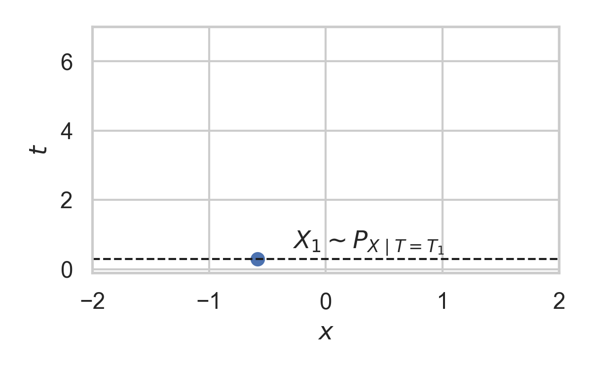

Relative Entropy Coding
Gergely Flamich
25/10/2023
gergely-flamich.github.io/talks
1. Talk Overview
- Transform coding & problems with \(\lfloor \cdot \rceil\)
- What is REC?
- How can we use REC?
- An example of a REC algorithm
- Some recent results
2. In Collaboration With


3. Motivation
3.1. Example: Lossy Image Compression


3.2. The Setup
Get an image \(Y \sim P_Y\)
\(\mathbb{H}[Y]\) bits is best we can do to compress \(Y\)
- \(\mathbb{H}[Y]\) might be infinite
- \(\mathbb{H}[Y]\) finite, but \(P_Y\) complicated
3.3. The Transform
\(X = f(Y)\)
- Pick \(f\) such that \(P_X\) or \(P_{X \mid Y}\) is "nice"
- DCT
- inference network of VAE
- \(\mathbb{H}[X]\) might still be infinite
3.4. Quantization + Entropy Coding
\(\hat{X} = \lfloor X \rceil\)
\(\mathbb{H}[\hat{X}] < \infty\)
- \(\lfloor \cdot \rceil\) not differentiable
- Don't have precise control over \(P_{\hat{X} \mid Y}\)
4. What is Relative Entropy Coding?
üí° stochastic alternative to \(\lfloor \cdot \rceil\) & entropy coding
4.1. Relative Entropy Coding
- \(X = f(Y) + \epsilon\)
- Send bits s.t. decoder can draw \(X \sim P_{X \mid Y}\)
Pros:
- Can use reparameterization trick!
- Precise control over \(P_{X \mid Y}\) via \(f\) and \(\epsilon\)!
But:
- How do we encode \(X\)?
- How many bits do we need?
4.2. Rough Idea for Achievability
Communication problem between Alice and Bob, who:
- share their PRNG seed \(S\)
- share \(P_X\) and can easily sample from it
Alice
- draws iid samples \(X_1, \dots\) with \(X_i \sim P_X\) using \(S\)
- picks \(K \in \mathbb{N}\) such that \(X_K \sim P_{X \mid Y}\)
- encodes \(K\) using \(\approx \log K\) bits
4.3. Coding Efficiency
When common randomness \(S\) available, there exists an algorithm, such that (Li and El Gamal, 2017): \[ {\color{red} I[X; Y]} \leq \mathbb{H}[X \mid S] \leq {\color{red} I[X; Y]} + {\color{blue} \log (I[X; Y] + 1) + 4} \]
\(I[X; Y]\) can be finite even when \(\mathbb{H}[X]\) is infinite!
4.4. Time Complexity
This is THE limitation of REC in practice currently
5. How Can We Use Relative Entropy Coding?
üí° Think of \(P_{X, Y}\) as a generative model!
5.1. Model Compression

- Dataset \(\mathcal{D} \sim P_{\mathcal{D}}\)
- NN \(f(w, x)\) with weights \(w\) with prior \(P_w\)
- Train weight posterior \(P_{w \mid \mathcal{D}}\) using ELBO
- Encode \(w \sim P_{w \mid \mathcal{D}}\) in \(I[w; \mathcal{D}]\) bits
Image from Blundell et al. (2015)
5.2. Data Compression with INRs

Image from Dupont et al. (2021)
Problem: Post-training quantization severely impacts performance!
5.3. Compress variational INRs!
COMBINER: COMpression with Bayesian Implicit Neural Representations
RECOMBINER: Robust and Enhanced COMBINER
üí°Gradient descent is the transform!
5.4. Compress variational INRs!

5.5. Compress variational INRs!

6. Take home message: Overview and Applications
- REC is a stochastic compression framework
- Alternative to quantization and entropy coding
- It finds applications in:
- Lossy compression with realism constraints
- Model compression
- Compressing Bayesian INRs
- Currently still too slow or limited
7. Greedy Poisson Rejection Sampling
7.1. Recap of the Problem
Correlated r.v.s \(X, Y \sim P_{X, Y}\)
Alice receives \(Y \sim P_Y\)
Bob wants to simulate \(X \sim P_{X \mid Y}\)
Share common randomness \(S\)
Shorthand: \(P = P_X\), \(Q = P_{X \mid Y}\)
7.2. Poisson Processes
- Collection of random points in space
- Focus on spatio-temporal processes on \(\mathbb{R}^D \times \mathbb{R}^+\)
- Exponential inter-arrival times
- Spatial distribution \(P_{X \mid T}\)
- We will pick it as the common randomness!
7.3. Poisson Processes

7.4. Example with \(P_{X \mid T} = \mathcal{N}(0, 1)\)

7.5. Example with \(P_{X \mid T} = \mathcal{N}(0, 1)\)

7.6. Example with \(P_{X \mid T} = \mathcal{N}(0, 1)\)

7.7. Example with \(P_{X \mid T} = \mathcal{N}(0, 1)\)

7.8. Example with \(P_{X \mid T} = \mathcal{N}(0, 1)\)

7.9. Example with \(P_{X \mid T} = \mathcal{N}(0, 1)\)

7.10. Example with \(P_{X \mid T} = \mathcal{N}(0, 1)\)

7.11. Example with \(P_{X \mid T} = \mathcal{N}(0, 1)\)

7.12. Greedy Poisson Rejection Sampling
üí° Delete some of the points, encode index of the first point that remains
7.13. GPRS with \(P = \mathcal{N}(0, 1), Q = \mathcal{N}(1, 1/16)\)

7.14. GPRS with \(P = \mathcal{N}(0, 1), Q = \mathcal{N}(1, 1/16)\)

7.15. GPRS with \(P = \mathcal{N}(0, 1), Q = \mathcal{N}(1, 1/16)\)

7.16. GPRS with \(P = \mathcal{N}(0, 1), Q = \mathcal{N}(1, 1/16)\)

7.17. GPRS with \(P = \mathcal{N}(0, 1), Q = \mathcal{N}(1, 1/16)\)

7.18. GPRS with \(P = \mathcal{N}(0, 1), Q = \mathcal{N}(1, 1/16)\)

7.19. GPRS with \(P = \mathcal{N}(0, 1), Q = \mathcal{N}(1, 1/16)\)

7.20. How to find the graph?
\[ \varphi(x) = \int_0^{\frac{dQ}{dP}(x)} \frac{1}{w_Q(\eta) - \eta \cdot w_P(\eta)} \, d\eta, \]
where \[ w_P(h) = \mathbb{P}_{Z \sim P}\left[\frac{dQ}{dP}(Z) \geq h \right] \] \[ w_Q(h) = \mathbb{P}_{Z \sim Q}\left[\frac{dQ}{dP}(Z) \geq h \right] \]
7.21. Analysis of GPRS
Codelength
Runtime
\[ \mathbb{E}[K \mid Y] = \exp(D_{\infty}[P_{X \mid Y} \Vert P_X]) \]
7.22. Speeding up GPRS
7.23. Fast GPRS with \(P = \mathcal{N}(0, 1), Q = \mathcal{N}(1, 1/16)\)

7.24. Fast GPRS with \(P = \mathcal{N}(0, 1), Q = \mathcal{N}(1, 1/16)\)

7.25. Fast GPRS with \(P = \mathcal{N}(0, 1), Q = \mathcal{N}(1, 1/16)\)

7.26. Fast GPRS with \(P = \mathcal{N}(0, 1), Q = \mathcal{N}(1, 1/16)\)

7.27. Fast GPRS with \(P = \mathcal{N}(0, 1), Q = \mathcal{N}(1, 1/16)\)

7.28. Fast GPRS with \(P = \mathcal{N}(0, 1), Q = \mathcal{N}(1, 1/16)\)

7.29. Analysis of faster GPRS
Now, encode search path \(\pi\).
\(\mathbb{H}[\pi] \leq I[X; Y] + \log(I[X; Y] + 1) + \mathcal{O}(1)\)
\(\mathbb{E}[\lvert\pi\rvert] = I[X; Z]) + \mathcal{O}(1)\)
This is optimal.
8. Take home message: GPRS
- GPRS is a rejection sampler using Poisson processes
- Can be used for relative entropy coding
- Has an optimally efficient variant for 1D, unimodal distributions
9. Some recent results
ü§î REC: A misnomer?
9.1. Coding Efficiency Revisited
REC coding efficiency: \[ {\color{red} I[X; Y]} \leq \mathbb{H}[X \mid S] \leq {\color{red} I[X; Y]} + {\color{blue} \log (I[X; Y] + 1) + 4} \]
ü§î set \(P_{X \mid Y} = \delta_Y\): \[ {\color{red} \mathbb{H}[Y]} \leq \mathbb{H}[X \mid S] \leq {\color{red} \mathbb{H}[Y]} + {\color{blue} \log (\mathbb{H}[Y] + 1) + 4} \]
9.2. Rewriting the KL Divergence
9.3. A New Measure of Efficiency
\[ D_{KL}[Q || P] = \log e - \int_0^\infty w_P(h) \log \frac{1}{h} \, dh \]
\[ D_{CS}[Q || P] = -\int_0^\infty w_P(h) \log w_P(h) \, dh \]
9.4. Properties of \(D_{CS}\)
- \(D_{CS}[Q || P] \geq 0\), equality when \(Q = P\).
- \(D_{CS}[\delta_x || P] = -\log P(x)\).
In the rejection sampling setup (Goc & F.):
\begin{align} D_{KL}[Q || P] &\leq D_{CS}[Q || P] \\ &\ {\color{red} \leq}\ \mathbb{H}[X \mid S, Y = y] \\ &\ {\color{blue} \leq}\ D_{CS}[Q || P] + \log(1 + e) \\ &\leq D_{KL}[Q || P] + \log(D_{KL}[Q || P] + 1) \\ & \quad\quad + \log(1 + e) + o(1) \end{align}
9.5. Some Empirical Results I
9.6. Some Empirical Results II
9.7. Some Empirical Results III

10. References
10.1. References I
- E. Agustsson and L. Theis. "Universally quantized neural compression" In NeurIPS 2020.
- C. Blundell, J. Cornebise, K. Kavukcuoglu and D. Wierstra. Weight uncertainty in neural network. In ICML 2015.
- E. Dupont, A. Golinski, M. Alizadeh, Y. W. Teh and Arnaud Doucet. "COIN: compression with implicit neural representations" arXiv preprint arXiv:2103.03123, 2021.
10.2. References II
- G. F. “Greedy Poisson Rejection Sampling” NeurIPS 2023, to appear.
- G. F.*, S. Markou*, and J. M. Hernandez-Lobato. "Fast relative entropy coding with A* coding". In ICML 2022.
- D. Goc and G. F. “On Channel Simulation Conjectures” unpublished.
10.3. References III
- Z. Guo*, G. F.*, J. He, Z. Chen and J. M. Hernandez Lobato, “Compression with Bayesian Implicit Neural Representations” NeurIPS 2023, to appear.
- P. Harsha, R. Jain, D. McAllester, and J. Radhakrishnan, “The communication complexity of correlation,” IEEE Transactions on Information Theory, vol. 56, no. 1, pp. 438–449, 2010.
- M. Havasi, R. Peharz, and J. M. HernaÃÅndez-Lobato. "Minimal Random Code Learning: Getting Bits Back from Compressed Model Parameters" In ICLR 2019.
10.4. References IV
- J. He*, G. F.*, Z. Guo and J. M. Hernandez Lobato, “RECOMBINER: Robust and Enhanced Compression with Bayesian Implicit Neural Representations” unpublished.
- C. T. Li and A. El Gamal, “Strong functional representation lemma and applications to coding theorems,” IEEE Transactions on Information Theory, vol. 64, no. 11, pp. 6967–6978, 2018.
10.5. References V
- L. Theis and E. Agustsson. On the advantages of stochastic encoders. arXiv preprint arXiv:2102.09270.
- L. Theis, T. Salimans, M. D. Hoffman and F. Mentzer (2022). Lossy compression with Gaussian diffusion. arXiv preprint arXiv:2206.08889.
11. Other material